|
|
|
|
|Instituto Tecnológico de Costa Rica|Escuela de Matemática| M. Sc. Geovanni Figueroa M. |
|
|
Problemas de valor inicial y de frontera
En la mayoría de las aplicaciones estamos interesados no en la solución general de una ecuación diferencial, sino en una solución particular que satisfaga ciertas condiciones dadas. Esto da origen a los problemas de valor inicial o de frontera.
Es decir
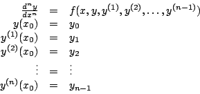
Ejemplo
Una partícula 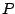 se mueve a lo largo del eje Recuerde que la primera derivada de la posición nos da la velocidad y la segunda derivada la aceleración. De donde el problema de valor inicial sería
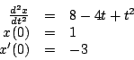
Integrando con respecto a
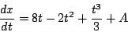
y usando la condición 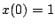 podemos hallar que 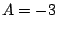, con
lo cual la velocidad en cualquier tiempo
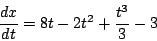
Integrando de nuevo
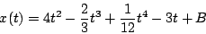
y usando la condición
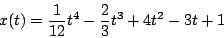
En la figura 7 se muestra la gráfica de la posición de la partícula versus tiempo.
Figura 7
Ejemplo El problema de valor inicial asociado es
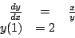
Para resolver la ecuación diferencial debemos separar variables e integrar
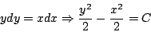
Y usando la condición inicial 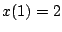 obtenemos que
Figura 8
.Es decir

Ejemplo
Una partícula se mueve a lo largo del eje El problema de valores de frontera asociado es
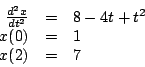
Integrando dos veces obtenemos que la posición de la partícula está dada por
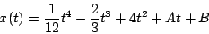
Evaluando las condiciones de frontera obtenemos el siguiente sistema
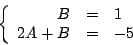
de donde y . Y así la posición de la partícula en cualquier tiempo está dada por
La gráfica de la posición se muestra en la figura
7.
|